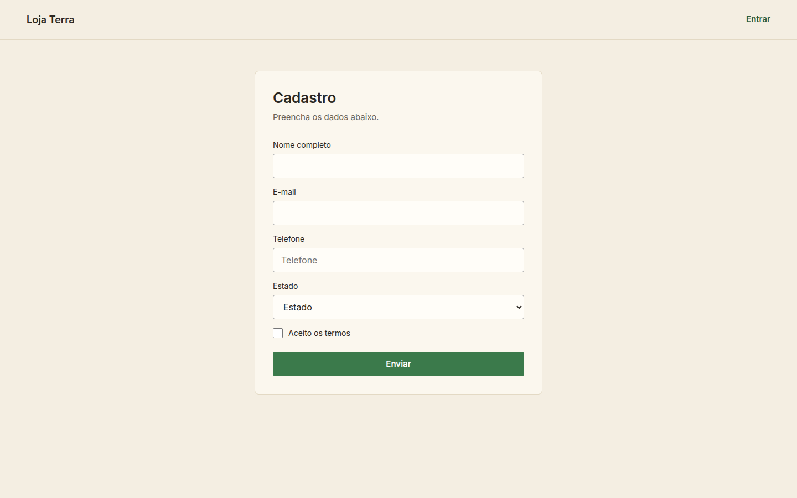
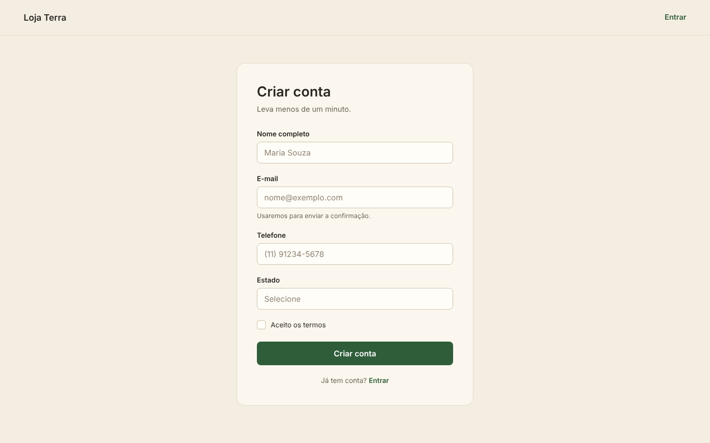
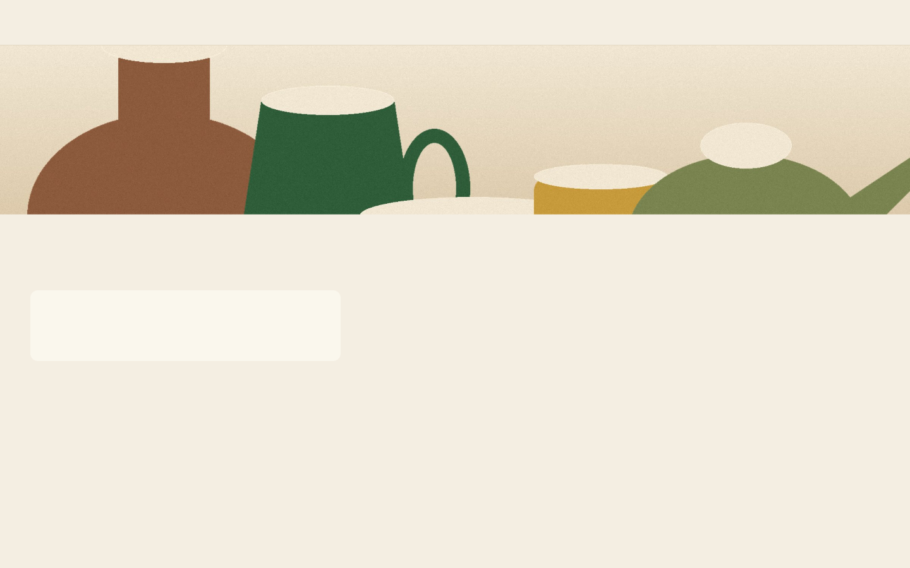
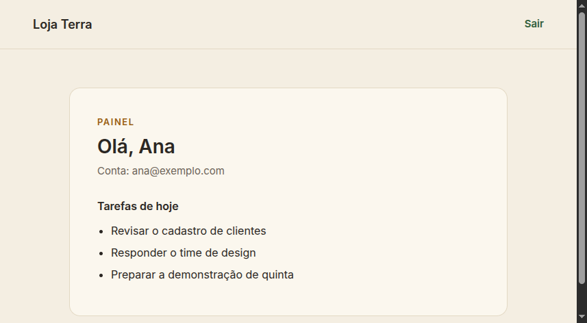
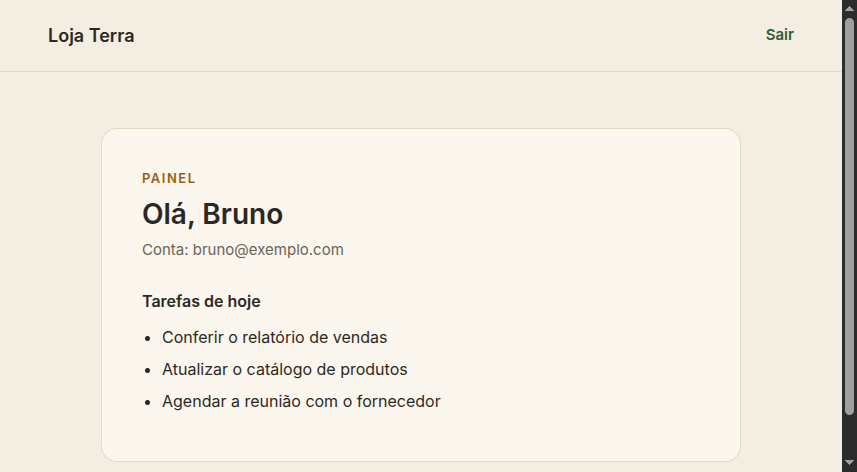

Três ferramentas
para uma IA usar um site
O que cada uma é, o que cada uma devolve e quando uma não serve no lugar da outra.
Playwright MCP · Chrome DevTools MCP · Agent Browser
Antes das ferramentas: a IA não enxerga a tela.
O que você vê

O que ela recebe
Saída real · a mesma página, lida por uma ferramenta
- heading "Cadastro" [level=1] [ref=e7] - textbox "Nome completo" [ref=e12] - textbox "E-mail" [ref=e15] - textbox "Telefone" [ref=e18] - combobox "Estado" [ref=e21] - checkbox "Aceito os termos" [ref=e24] - button "Enviar" [ref=e26]
Cada item da lista tem um nome e uma ref, um código curto que aponta para ele.
- Sem nome: o campo vira "campo 1" e a IA não sabe o que escrever.
- Ref muda: a página recarregou, e clicar com a ref antiga age no lugar errado.
- Age cedo demais: a lista está incompleta, e a IA clica no que existe naquele instante.
- Sessão errada: a lista é de outra conta. O nome só parece estranho se alguém conferir.
As três ferramentas da aula leem essa mesma lista. A diferença está no que cada uma faz depois.
A primeira diferença
Duas formas de a IA alcançar o navegador.
1. Servidor MCP. Um programa que se anuncia para a IA com uma lista de ações. A IA escolhe e chama sozinha. Você só precisa registrar e aprovar.
Saída real · claude mcp list · 05/11/2026
playwright: npx @playwright/mcp@latest ⏸ Pending approval chrome-devtools: npx -y chrome-devtools-mcp@latest ⏸ Pending approval
2. Programa de linha de comando. Você digita, um script digita, ou a IA digita no terminal se você pedir. Nada fica registrado no Claude Code: a ação só acontece quando alguém roda o comando.
$ agent-browser open localhost:3000/login/ $ agent-browser snapshot -i
É a diferença entre oferecer a ação à IA e executar a ação você mesmo. O Agent Browser faz as duas coisas; os dois slides seguintes mostram como cada uma chega ao navegador.
MCP é só o combinado de como a IA pede e o programa responde. Os servidores do projeto ficam declarados em .mcp.json; o Claude Code pede aprovação ao abrir a pasta.
Por dentro · servidor MCP
O servidor MCP fica entre a IA e o navegador.
- Sobe sozinho: o Claude Code lê o
.mcp.jsone inicianpx @playwright/mcp@latest. - Anuncia o que sabe: devolve 25 ferramentas, como
browser_navigateebrowser_snapshot. - Executa: cada pedido vira uma ação no navegador, e a resposta volta com o texto da página.
Saída real · troca com @playwright/mcp · 05/11/2026
→ {"jsonrpc":"2.0","id":3,"method":"tools/call",
"params":{"name":"browser_navigate",
"arguments":{"url":"http://localhost:3000/cadastro/"}}}
← {"content":[{"type":"text","text":
"### Ran Playwright code
await page.goto('http://localhost:3000/cadastro/');
### Page
- Page URL: http://localhost:3000/cadastro/
- Page Title: Cadastro - Loja Terra …Trecho real, com linhas quebradas para caber.
A IA não fala com o navegador: ela manda um pedido ao servidor, e é o servidor que fala com o navegador.
Por dentro · programa de linha de comando
Cada comando fala com um processo que segura o Chrome.
1. O comando é curto. agent-browser open entrega a ordem a um processo em segundo plano, o daemon. Ele abre o Chrome e o mantém aberto de um comando para o outro.
2. A sessão é um navegador separado. AGENT_BROWSER_SESSION ou --session cria um navegador com cookies e abas próprios. Duas sessões, dois logins.
3. O mesmo programa também fala MCP. agent-browser mcp expõe 29 ferramentas, com o prefixo agent_browser_, pelo mesmo stdin e stdout do Playwright MCP.
$ agent-browser open http://localhost:3000/cadastro/ [agent-browser] launched browser ✓ Cadastro - Loja Terra http://localhost:3000/cadastro/ $ agent-browser snapshot -i - link "Loja Terra" [ref=e1] - link "Entrar" [ref=e2] - heading "Cadastro" [level=1, ref=e3] - textbox "Nome completo" [ref=e4] - textbox "E-mail" [ref=e5] - textbox "Telefone" [ref=e6]
Saída real, executada em 05/11/2026 com o Agent Browser 0.41.0.
O navegador não some quando o comando termina. Se ninguém fechar, o daemon fecha o Chrome sozinho depois de uma hora sem uso; agent-browser close fecha antes.
Ainda sobre registrar
Onde a ferramenta fica instalada.
| Alcance | Claude Code | Devin |
|---|---|---|
| Só esta pasta (padrão) | claude mcp add | devin mcp add |
| A máquina toda todos os seus projetos | claude mcp add -s user | devin mcp add -s user |
| O time (versionado) | claude mcp add -s projectgrava em .mcp.json | devin mcp add -s projectgrava em .devin/mcp_config.json |
# instalar na máquina toda · Claude Code claude mcp add -s user playwright \ npx @playwright/mcp@latest
# instalar na máquina toda · Devin devin mcp add -s user playwright \ -- npx @playwright/mcp@latest
O Devin também aceita pela web, em Customize → MCPs → Add MCP → Add custom MCP, e guarda o registro global em ~/.config/devin/mcp_config.json. Repare no -- antes do comando: é exigência do Devin, o Claude Code não pede.
O Agent Browser tem dois modos. Como comando, npm install -g agent-browser já instala na máquina toda e não pede registro. Como servidor MCP, é o mesmo programa com agent-browser mcp, configurado no cliente.
As três, lado a lado.
| Playwright MCP | Chrome DevTools MCP | Agent Browser | |
|---|---|---|---|
| O que é | servidor MCP | servidor MCP | programa de linha de comando e servidor MCP (agent-browser mcp) |
| Quem dá a ordem | a IA | a IA | você, um script, ou a IA |
| Abre, lê e age na página | sim | sim | sim |
| Limita rede e CPU para medir | não | sim | não |
| Grava trace e aponta a causa da lentidão | não | sim | não |
| Dá os números das Core Web Vitals | não | sim | sim |
| Sessões nomeadas, um login em cada | não | não | sim |
| Navegadores | Chromium, Firefox, WebKit | Chrome | Chrome |
As três abrem a página e clicam. A diferença está nas três linhas destacadas.
Ferramenta 1 de 3
Playwright MCP
Serve para agir na página com segurança: ler a lista de elementos, clicar, preencher e guardar a prova em imagem.
Instalar · Node 18 ou superior
# só nesta pasta claude mcp add playwright npx @playwright/mcp@latest # na máquina toda claude mcp add -s user playwright npx @playwright/mcp@latest
Usar · você escreve em português
Abra /cadastro/ com o Playwright MCP, liste os campos e tire uma captura da página inteira.
O que a IA chama por baixo
- browser_navigate
- abre o endereço
- browser_snapshot
- lê a página e devolve as refs
- browser_click
- clica por ref
- browser_fill_form
- preenche vários campos de uma vez
- browser_wait_for
- espera um texto aparecer
- browser_take_screenshot
- guarda a prova
Não mede desempenho. Não grava trace, não calcula LCP e não limita rede nem CPU. Para descobrir por que a página demora, ele não serve.
Playwright MCP · na prática
Ela procura “Criar conta”. A página diz “Enviar”.
O design

A página entregue
A captura da direita saiu do browser_take_screenshot. Comparada com o design, dá 13 diferenças — e o botão que a IA procurava não existe.
No laboratório · cenário 1 · design/ contra public/cadastro/ · lista completa em gabarito/diferencas-cadastro.md
Playwright MCP · demonstração ao vivo
Cole isto no Claude Code e assista
Use o Playwright MCP para comparar a página de cadastro com o design do laboratório. 1. Abra http://localhost:3000/cadastro/ e espere a página carregar. 2. Tire uma captura da página inteira e salve em capturas/ia-cadastro.png. 3. Abra a imagem de referência design/cadastro-vazio.png. 4. Compare as duas imagens e liste cada diferença visível: elemento, o que o design mostra, o que a página mostra e gravidade (Alta, Média ou Baixa). Não abra gabarito/ nem public/: use só o navegador e a imagem de design/. Não invente diferenças. Responda com uma tabela.
Antes: node server.js nesta pasta, e o Claude Code aberto aqui. Quando o Playwright MCP pedir aprovação, aprove na tela: é o "Pending approval" do slide 3.
Ferramenta 2 de 3
Chrome DevTools MCP
Serve para medir e explicar: grava o carregamento, diz onde o tempo foi e simula a rede e o aparelho do usuário.
Instalar · Node 18 e o Chrome
# só nesta pasta claude mcp add chrome-devtools npx chrome-devtools-mcp@latest # na máquina toda claude mcp add -s user chrome-devtools npx chrome-devtools-mcp@latest
Usar
Emule Slow 4G e CPU 4x, meça /lenta/ com recarga e diga os 3 maiores culpados pelo LCP.
O que a IA chama por baixo
- emulate
- limita rede e CPU
- performance_start_trace
- grava o carregamento
- performance_analyze_insight
- explica a causa
- list_network_requests
- tudo que foi baixado
- list_console_messages
- os erros da página
- lighthouse_audit
- a nota completa
Emular primeiro, medir depois. Esta é a ordem, e é o erro mais caro do dia quando se inverte — como o slide "Duas medições" mostra.
A mesma página, medida duas vezes.
Saída real · agent-browser vitals · sem limitação
url: http://localhost:3000/lenta/ ttfb: 1.7ms fcp: 768ms lcp: 768ms cls: 0
Saída real · Chrome DevTools MCP · Slow 4G + CPU 4x
url: http://localhost:3000/lenta/ LCP: 20 040 ms CLS: 0,06 cache ignorado, com recarga
Mesma página, mesma máquina, mesmo minuto: 768 ms contra 20 segundos.
A diferença não foi a ferramenta. Foi a condição. No computador de quem desenvolve a página parece ótima; na rede de quem usa, não.
E é assim que o usuário vê, 1,3 segundo depois.

O texto está todo na página. A fonte ainda não chegou — e foi pedida com font-display: block, que manda o navegador esconder o texto até lá.
Captura real de /lenta/ em Slow 4G e CPU 4x. Nem o nome da loja aparece. Sem limitação, essa tela nunca acontece no computador de quem desenvolve.
E ele diz onde os 20 segundos foram.
Desenhar levou 0,05 s. O resto foi espera, e é isso que o vitals sozinho não mostra.
A imagem do topo tem 2400×900 e pesa 345 KB, mas é exibida num espaço de 1440.
Medido com performance_start_trace, em 05/11/2026.
Com o diagnóstico, o conserto.
LCP nas mesmas condições: Slow 4G, CPU 4x, cache ignorado.
- Imagens no tamanho certo.
- Uma chamada à API, em vez de duas.
- Nada bloqueando a renderização.
Oito vezes mais rápido, sem reescrever o site.
No laboratório · cenário 2 · conserte public/lenta/ e meça de novo · o “depois” pronto está em /lenta-gabarito/
O que isso muda no seu código.
✗ <label>Telefone</label> o nome vem do marcador ✓ <label for="telefone">Telefone</label> o nome vem do rótulo ✗ <div onclick="enviar()">Enviar</div> não é botão para ninguém ✓ <button type="submit">Enviar</button> é botão para todo mundo ✗ <img src="hero.jpg"> 2400 px · 345 KB ✓ <img src="hero-1440.webp" width="1440" 1440 px · 10 KB height="540" fetchpriority="high">
O que um leitor de tela precisa é exatamente o que a IA precisa. É a mesma base.
A primeira linha é um defeito real de public/cadastro/. E repare: agent-browser a11y passa nessa página com 0 violações — auditoria automática não enxerga tudo, e ferramenta nenhuma substitui olhar.
Ferramenta 3 de 3
Agent Browser
Serve para rodar o fluxo pelo terminal, com uma sessão nomeada por login — e cada sessão guarda os próprios cookies.
Instalar · o -g já instala na máquina toda
npm install -g agent-browser agent-browser install
Usar · você digita, ou um script digita
ab="agent-browser --session a" $ab open localhost:3000/login/ $ab snapshot -i $ab fill @e4 "ana@exemplo.com" $ab click @e6
Comandos que vamos usar
- --session <nome>
- abre ou retoma uma sessão isolada
- open
- vai para o endereço
- snapshot -i
- lê a página e devolve as refs
- fill / click
- preenche e clica por ref
- vitals
- os números das Web Vitals
- a11y
- auditoria de acessibilidade
- session list
- mostra o que está aberto
Também é servidor MCP. Com agent-browser mcp, a IA encontra as ferramentas sozinha, como no Playwright MCP. Como comando, serve igual a você, a um script de CI e à IA, sem cliente nenhum.
Agent Browser · na prática
Dois logins ao mesmo tempo, sem logout no meio.
--session a

--session b

Dois cookies, duas listas de tarefas, um navegador só. Capturadas no mesmo minuto.
No laboratório · cenário 3 · public/login/ e /painel · contas ana@exemplo.com e bruno@exemplo.com, senha teste123
O mesmo erro, nas três ferramentas.
Saída real · agindo sem ler a página
$ fill @e4 "bruno@exemplo.com" ✗ Unknown ref: e4 ✗ Unknown ref: e5 ✗ Unknown ref: e6 ✗ Wait timed out after 25000ms
Saída real · lendo antes de agir
$ snapshot -i - textbox "E-mail" [ref=e4] ✓ Done ✓ Done ✓ Done → /painel "Olá, Bruno"
Ler → agir → conferir
- Uma ref vale para uma leitura, numa sessão.
- Depois do login, a mesma página devolveu
e7,e8,e9. - Esse erro aconteceu ao montar esta aula. Vale para as três, porque todas trabalham por ref.
Uma quarta ideia · experimental
E se a própria página dissesse o que a IA pode fazer?
Hoje a IA adivinha as ações lendo a tela. Com WebMCP, a página declara as ações e a IA chama direto.
- Hoje: a IA lê a lista de elementos e tenta descobrir o que cada botão faz.
- Com WebMCP: a página registra cada ação com nome e descrição.
- Estado: experimental. Teste de origem no Chrome 149, e uma flag para desenvolvimento local.
Para testar localmente: chrome://flags/#enable-webmcp-testing, em Ativada, e reinicie o Chrome.
Fica fora do roteiro. É para acompanhar, não para usar nesta aula.
Qual usar.
| Quando a sua pergunta é… | A ferramenta é |
|---|---|
| “A tela entregue bate com o design?” | Playwright MCP |
| “Esse formulário envia e confirma mesmo?” | Playwright MCP |
| “Por que isso demora tanto para o usuário?” | Chrome DevTools MCP |
| “O que exatamente está travando a renderização?” | Chrome DevTools MCP |
| “Roda esse fluxo com dois logins diferentes.” | Agent Browser |
| “Coloca isso num script que roda sozinho.” | Agent Browser |
Tarefa que mistura as três? A ordem é sempre medir, corrigir, medir de novo.
A quarta ideia, o WebMCP, está no slide anterior.
Fontes
Para ler depois.
- WebMCP:
developer.chrome.com/docs/ai/webmcp?hl=pt-br - Agent Browser:
github.com/vercel-labs/agent-browser - Playwright MCP:
playwright.dev/docs/getting-started-mcp
Agora é você.
| Tarefa | Onde | |
|---|---|---|
| 1 | Compare com o design Playwright MCP. Quantas das 13 você acha? | /cadastro/ e design/ · salve em capturas/ |
| 2 | Meça a página lenta Chrome DevTools MCP. Emule antes de medir. | /lenta/ · anote em medicoes/ |
| 3 | Rode dois logins Agent Browser, uma sessão para cada conta. | /login/ e /painel · capturas em saidas/ |
cd laboratorio-agentes node server.js
Ler → agir → conferir.
O gabarito só depois de tentar. Executado nesta máquina em 05/11/2026: snapshots e capturas com Playwright MCP, traces com Chrome DevTools MCP, sessões e vitals com Agent Browser 0.41.0.